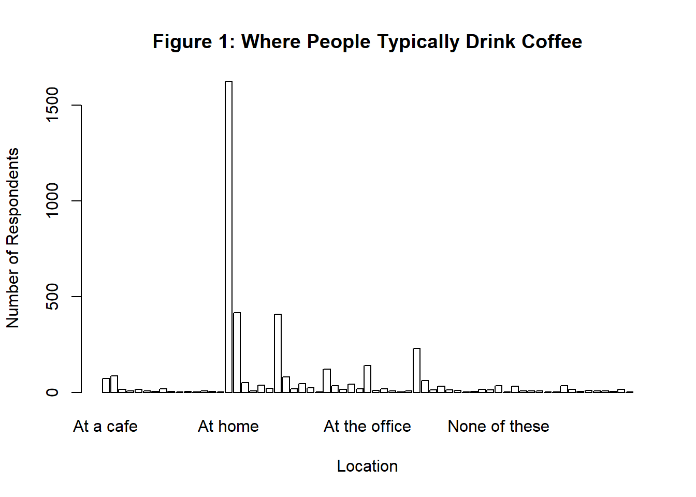

Submission ID
What is your age?
How many cups of coffee do you typically drink per day?
Where do you typically drink coffee?
Where do you typically drink coffee? (At home)
Where do you typically drink coffee? (At the office)
Where do you typically drink coffee? (On the go)
Where do you typically drink coffee? (At a cafe)
Where do you typically drink coffee? (None of these)
How do you brew coffee at home?
How do you brew coffee at home? (Pour over)
How do you brew coffee at home? (French press)
How do you brew coffee at home? (Espresso)
How do you brew coffee at home? (Coffee brewing machine (e.g. Mr. Coffee))
How do you brew coffee at home? (Pod/capsule machine (e.g. Keurig/Nespresso))
How do you brew coffee at home? (Instant coffee)
How do you brew coffee at home? (Bean-to-cup machine)
How do you brew coffee at home? (Cold brew)
How do you brew coffee at home? (Coffee extract (e.g. Cometeer))
How do you brew coffee at home? (Other)
How else do you brew coffee at home?
On the go, where do you typically purchase coffee?
On the go, where do you typically purchase coffee? (National chain (e.g. Starbucks, Dunkin))
On the go, where do you typically purchase coffee? (Local cafe)
On the go, where do you typically purchase coffee? (Drive-thru)
On the go, where do you typically purchase coffee? (Specialty coffee shop)
On the go, where do you typically purchase coffee? (Deli or supermarket)
On the go, where do you typically purchase coffee? (Other)
Where else do you purchase coffee?
What is your favorite coffee drink?
Please specify what your favorite coffee drink is
Do you usually add anything to your coffee?
Do you usually add anything to your coffee? (No - just black)
Do you usually add anything to your coffee? (Milk, dairy alternative, or coffee creamer)
Do you usually add anything to your coffee? (Sugar or sweetener)
Do you usually add anything to your coffee? (Flavor syrup)
Do you usually add anything to your coffee? (Other)
What else do you add to your coffee?
What kind of dairy do you add?
What kind of dairy do you add? (Whole milk)
What kind of dairy do you add? (Skim milk)
What kind of dairy do you add? (Half and half)
What kind of dairy do you add? (Coffee creamer)
What kind of dairy do you add? (Flavored coffee creamer)
What kind of dairy do you add? (Oat milk)
What kind of dairy do you add? (Almond milk)
What kind of dairy do you add? (Soy milk)
What kind of dairy do you add? (Other)
What kind of sugar or sweetener do you add?
What kind of sugar or sweetener do you add? (Granulated Sugar)
What kind of sugar or sweetener do you add? (Artificial Sweeteners (e.g., Splenda))
What kind of sugar or sweetener do you add? (Honey)
What kind of sugar or sweetener do you add? (Maple Syrup)
What kind of sugar or sweetener do you add? (Stevia)
What kind of sugar or sweetener do you add? (Agave Nectar)
What kind of sugar or sweetener do you add? (Brown Sugar)
What kind of sugar or sweetener do you add? (Raw Sugar (Turbinado))
What kind of flavorings do you add?
What kind of flavorings do you add? (Vanilla Syrup)
What kind of flavorings do you add? (Caramel Syrup)
What kind of flavorings do you add? (Hazelnut Syrup)
What kind of flavorings do you add? (Cinnamon (Ground or Stick))
What kind of flavorings do you add? (Peppermint Syrup)
What kind of flavorings do you add? (Other)
What other flavoring do you use?
Before today's tasting, which of the following best described what kind of coffee you like?
How strong do you like your coffee?
What roast level of coffee do you prefer?
How much caffeine do you like in your coffee?
Lastly, how would you rate your own coffee expertise?
Coffee A - Bitterness
Coffee A - Acidity
Coffee A - Personal Preference
Coffee A - Notes
Coffee B - Bitterness
Coffee B - Acidity
Coffee B - Personal Preference
Coffee B - Notes
Coffee C - Bitterness
Coffee C - Acidity
Coffee C - Personal Preference
Coffee C - Notes
Coffee D - Bitterness
Coffee D - Acidity
Coffee D - Personal Preference
Coffee D - Notes
Between Coffee A, Coffee B, and Coffee C which did you prefer?
Between Coffee A and Coffee D, which did you prefer?
Lastly, what was your favorite overall coffee?
Do you work from home or in person?
In total, much money do you typically spend on coffee in a month?
Why do you drink coffee?
Why do you drink coffee? (It tastes good)
Why do you drink coffee? (I need the caffeine)
Why do you drink coffee? (I need the ritual)
Why do you drink coffee? (It makes me go to the bathroom)
Why do you drink coffee? (Other)
Other reason for drinking coffee
Do you like the taste of coffee?
Do you know where your coffee comes from?
What is the most you've ever paid for a cup of coffee?
What is the most you'd ever be willing to pay for a cup of coffee?
Do you feel like you’re getting good value for your money when you buy coffee at a cafe?
Approximately how much have you spent on coffee equipment in the past 5 years?
Do you feel like you’re getting good value for your money with regards to your coffee equipment?
Gender
Gender (please specify)
Education Level
Ethnicity/Race
Ethnicity/Race (please specify)
Employment Status
Number of Children
Political AffiliationCoffee Survey Final Project EPI590R
Introduction to data
In October 2023, “world champion barista” James Hoffmann and coffee company Cometeer held the “Great American Coffee Taste Test” on YouTube, during which viewers were asked to fill out a survey about 4 coffees they ordered from Cometeer for the tasting. Data blogger Robert McKeon Aloe analyzed the data the following month. This data set can be found under the 2024 folder in TidyTuesday.
Read in the dataset
What is the most common number of cups of coffee consumed? (function)
Most participants report drinking 2 cups of coffee a day. This is called the mode.
Table 1 (a {gtsummary} table of descriptive statistics)
| Variable | Total | Female N = 853 |
Male N = 2,524 |
Non-binary N = 103 |
Other (please specify) N = 10 |
Prefer not to say N = 33 |
P |
|---|---|---|---|---|---|---|---|
| Education | <0.001 | ||||||
| Bachelor's degree | 1,759 (51%) | 408 (49%) | 1,272 (52%) | 64 (63%) | 5 (50%) | 10 (45%) | |
| Doctorate or professional degree | 340 (9.9%) | 84 (10%) | 254 (10%) | 0 (0%) | 0 (0%) | 2 (9.1%) | |
| High school graduate | 118 (3.4%) | 25 (3.0%) | 87 (3.5%) | 3 (2.9%) | 2 (20%) | 1 (4.5%) | |
| Less than high school | 22 (0.6%) | 5 (0.6%) | 16 (0.6%) | 0 (0%) | 1 (10%) | 0 (0%) | |
| Master's degree | 735 (21%) | 215 (26%) | 495 (20%) | 20 (20%) | 0 (0%) | 5 (23%) | |
| Some college or associate's degree | 460 (13%) | 94 (11%) | 345 (14%) | 15 (15%) | 2 (20%) | 4 (18%) | |
| Missing | 89 | 22 | 55 | 1 | 0 | 11 | |
| Race/ethnicity | <0.001 | ||||||
| Asian/Pacific Islander | 411 (12%) | 125 (15%) | 277 (11%) | 6 (5.9%) | 0 (0%) | 3 (17%) | |
| Black/African American | 39 (1.1%) | 11 (1.3%) | 26 (1.1%) | 1 (1.0%) | 1 (10%) | 0 (0%) | |
| Hispanic/Latino | 218 (6.4%) | 52 (6.3%) | 158 (6.4%) | 8 (7.9%) | 0 (0%) | 0 (0%) | |
| Native American/Alaska Native | 13 (0.4%) | 4 (0.5%) | 8 (0.3%) | 0 (0%) | 1 (10%) | 0 (0%) | |
| Other (please specify) | 110 (3.2%) | 26 (3.2%) | 74 (3.0%) | 4 (4.0%) | 2 (20%) | 4 (22%) | |
| White/Caucasian | 2,624 (77%) | 604 (73%) | 1,921 (78%) | 82 (81%) | 6 (60%) | 11 (61%) | |
| Missing | 108 | 31 | 60 | 2 | 0 | 15 | |
| Employment | <0.001 | ||||||
| Employed full-time | 2,707 (79%) | 563 (68%) | 2,053 (83%) | 70 (69%) | 5 (50%) | 16 (73%) | |
| Employed part-time | 200 (5.9%) | 78 (9.5%) | 108 (4.4%) | 13 (13%) | 0 (0%) | 1 (4.5%) | |
| Homemaker | 78 (2.3%) | 65 (7.9%) | 11 (0.4%) | 0 (0%) | 0 (0%) | 2 (9.1%) | |
| Retired | 85 (2.5%) | 28 (3.4%) | 55 (2.2%) | 0 (0%) | 1 (10%) | 1 (4.5%) | |
| Student | 221 (6.5%) | 50 (6.1%) | 154 (6.3%) | 12 (12%) | 3 (30%) | 2 (9.1%) | |
| Unemployed | 126 (3.7%) | 38 (4.6%) | 80 (3.3%) | 7 (6.9%) | 1 (10%) | 0 (0%) | |
| Missing | 106 | 31 | 63 | 1 | 0 | 11 | |
| Age | <0.001 | ||||||
| <18 years old | 13 (0.4%) | 4 (0.5%) | 8 (0.3%) | 0 (0%) | 1 (10%) | 0 (0%) | |
| >65 years old | 74 (2.1%) | 21 (2.5%) | 52 (2.1%) | 0 (0%) | 0 (0%) | 1 (3.0%) | |
| 18-24 years old | 387 (11%) | 74 (8.7%) | 289 (11%) | 14 (14%) | 5 (50%) | 5 (15%) | |
| 25-34 years old | 1,790 (51%) | 419 (49%) | 1,284 (51%) | 69 (67%) | 3 (30%) | 15 (45%) | |
| 35-44 years old | 846 (24%) | 197 (23%) | 621 (25%) | 19 (18%) | 1 (10%) | 8 (24%) | |
| 45-54 years old | 256 (7.3%) | 78 (9.1%) | 176 (7.0%) | 1 (1.0%) | 0 (0%) | 1 (3.0%) | |
| 55-64 years old | 157 (4.5%) | 60 (7.0%) | 94 (3.7%) | 0 (0%) | 0 (0%) | 3 (9.1%) | |
| Cups per day | <0.001 | ||||||
| 1 | 1,167 (33%) | 366 (43%) | 751 (30%) | 38 (37%) | 1 (10%) | 11 (33%) | |
| 2 | 1,476 (42%) | 279 (33%) | 1,138 (45%) | 38 (37%) | 6 (60%) | 15 (45%) | |
| 3 | 409 (12%) | 57 (6.7%) | 344 (14%) | 7 (6.8%) | 1 (10%) | 0 (0%) | |
| 4 | 109 (3.1%) | 12 (1.4%) | 94 (3.7%) | 0 (0%) | 1 (10%) | 2 (6.1%) | |
| Less than 1 | 304 (8.6%) | 133 (16%) | 149 (5.9%) | 17 (17%) | 1 (10%) | 4 (12%) | |
| More than 4 | 58 (1.6%) | 6 (0.7%) | 48 (1.9%) | 3 (2.9%) | 0 (0%) | 1 (3.0%) | |
| Monthly spend ($) | <0.001 | ||||||
| $20-$40 | 1,278 (37%) | 289 (35%) | 929 (37%) | 42 (42%) | 4 (40%) | 14 (44%) | |
| $40-$60 | 1,038 (30%) | 208 (25%) | 795 (32%) | 23 (23%) | 2 (20%) | 10 (31%) | |
| $60-$80 | 384 (11%) | 83 (10.0%) | 285 (11%) | 12 (12%) | 2 (20%) | 2 (6.3%) | |
| $80-$100 | 220 (6.3%) | 52 (6.2%) | 157 (6.3%) | 8 (7.9%) | 0 (0%) | 3 (9.4%) | |
| <$20 | 416 (12%) | 177 (21%) | 225 (9.0%) | 11 (11%) | 1 (10%) | 2 (6.3%) | |
| >$100 | 129 (3.7%) | 24 (2.9%) | 98 (3.9%) | 5 (5.0%) | 1 (10%) | 1 (3.1%) | |
| Missing | 58 | 20 | 35 | 2 | 0 | 1 |
There were 4042 participants. Among male participants, the median (IQR) age was NAyears.
Table 2 (Fit a regression and present well-formatted results from the regression)
Figure 1
